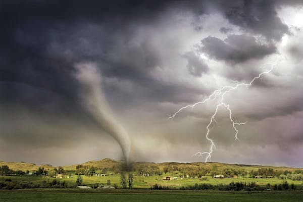

Different Natural Disasters
Natural disasters are on the rise all around the world as more and more people are injured or killed due these acts of nature. Some of the ones we have seen this year have been powerful and extremely destructive to the areas affected. This severity has increased due to the change in climate over the years and continues to grow as we pollute the Earth more and more. Not all natural disasters are increased by climate change though like volcanoes and earthquakes as these occur underneath the Earth’s surface over long periods of time. These two can drastically affect the world’s climate but only after thousands of years. We cannot stop these disasters from happening but learning how to prepare and stay safe can save many lives in deadly situations. On this website you will learn about some of the different natural disasters and how you can stay safe and aware.
Tornadoes
Tornadoes are strong blowing columns of wind that can be produced from a thunderstorm or supercell. These can develop from air changing direction at a significant height with warm air up top and cold air at the bottom, the amount of wind shear is what makes it stronger. These occur during supercells more than thunderstorms and the supercell can lead to stronger or multiple tornadoes in a brief period. Tornadoes can differ in shape as some are skinnier and wispier while others can be wide and large, both of which can range from speeds of 100 to 300 MPH. Tornadoes can be caught before a thunderstorm occurs and can have different levels of intensity, this is measured by the WSR-88D Doppler and sent out to the public as a warning. Looking out for these watches and warnings can save your life as you get prepared for a tornado to strike.